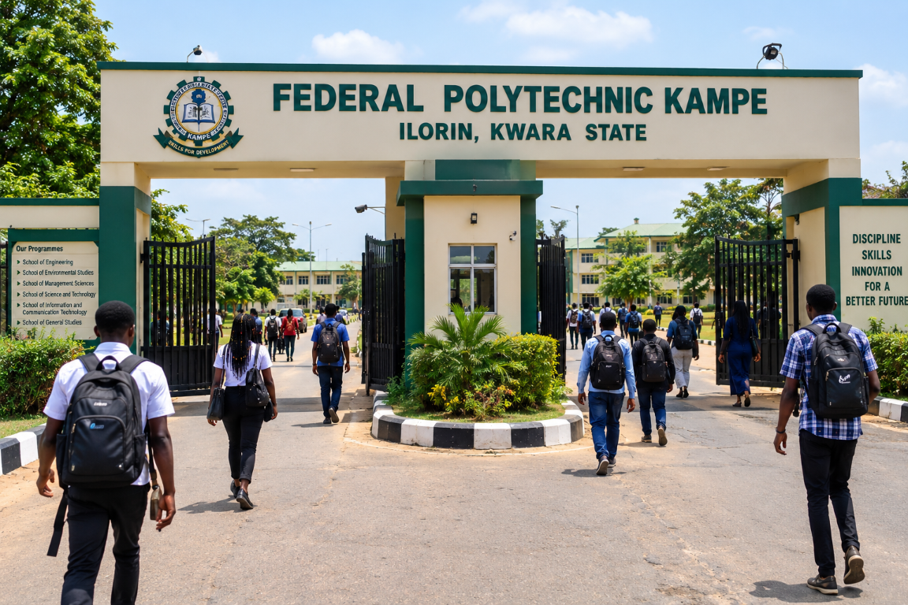
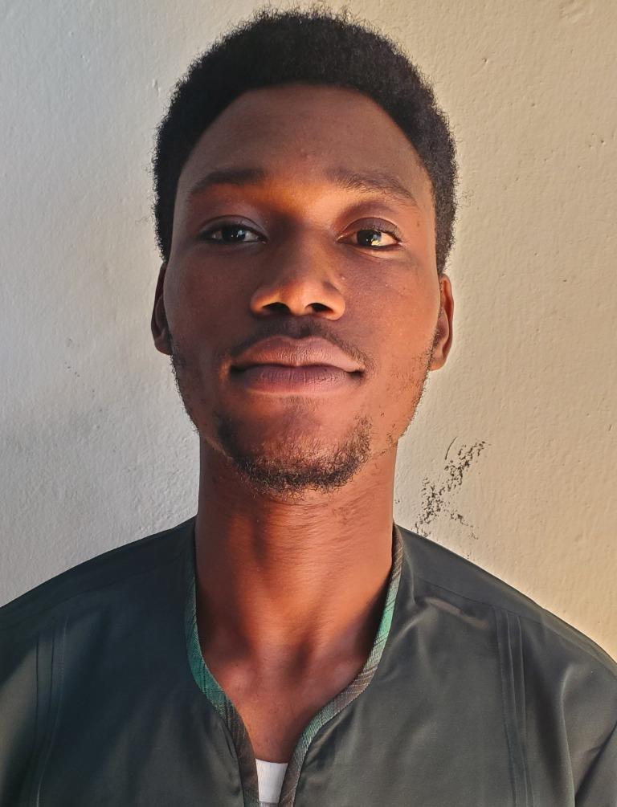
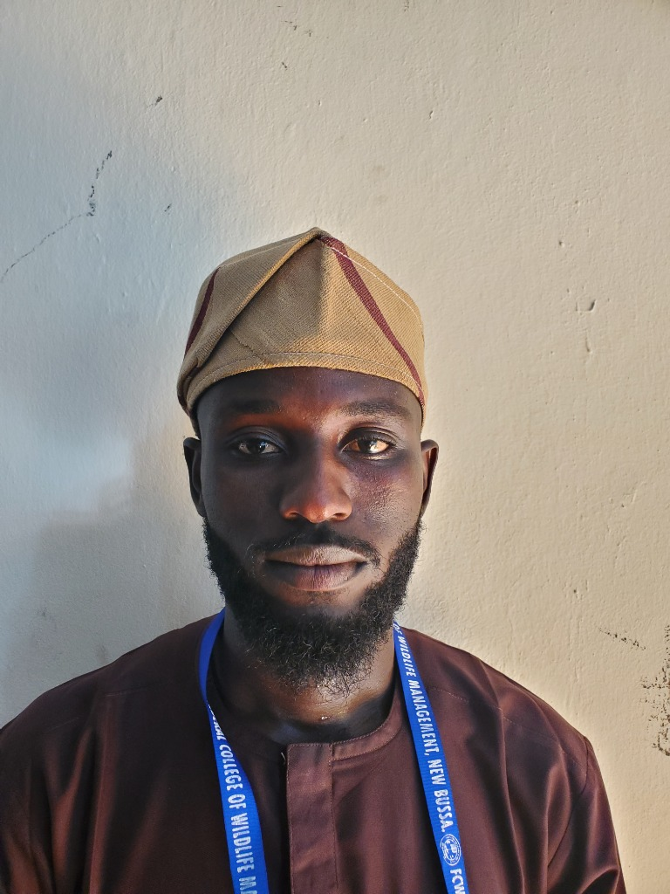
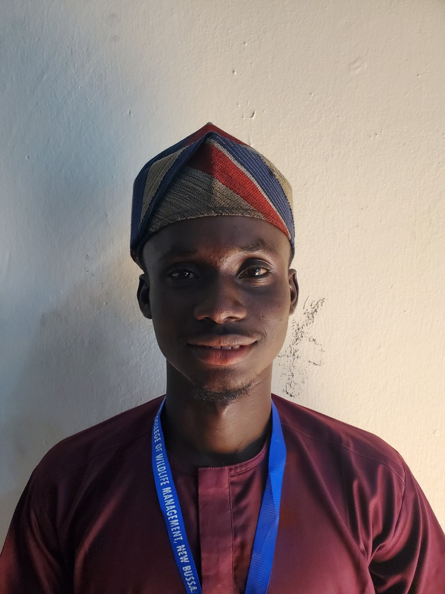
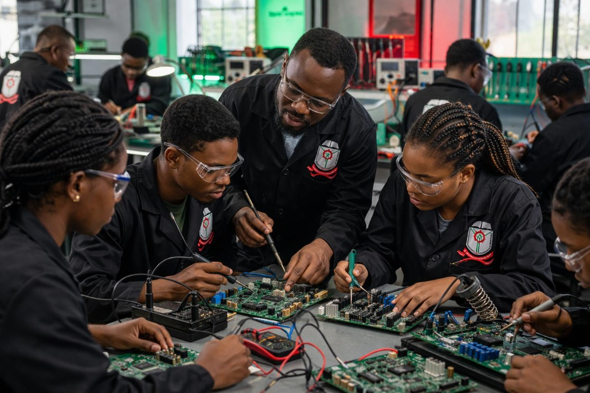

Welcome to Federal Polytechnic Kampe
Learn with purpose.
Build your future.
Discover practical learning, new skills, and opportunities for what comes next.
Explore admissionsA place to learn and grow
Federal Polytechnic Kampe welcomes learners ready to explore courses, gain practical skills, and shape their own path forward.
Find your study path
Choose the study option that works for you. Contact the school office for current admission details.
Explore a focused study experience and build your knowledge and practical skills.
Explore departments and coursesAsk the admissions office about study options designed to fit around your schedule.
Explore departments and coursesExplore what you can study
View the departments, programmes, and courses offered at the school.
Our story
Federal Polytechnic Kampe, ILLIONIS, was founded in 1980 by Prof. Praise Stephen, who also serves as the Vice Chancellor. Located in Illinois, Kwara State, the school welcomes students to learn different courses and develop new skills.
Meet our officialsMeet the team
Our officials help guide the school and support its learning community.

Vice Chancellor

Deputy Vice Chancellor

Registrar
Bursar
Learning beyond the classroom
Explore student life, practical learning, and spaces for study.

School updates
Important news and updates from the school.
Take the next step
Get in touch with the school office for information about full-time and part-time study options.